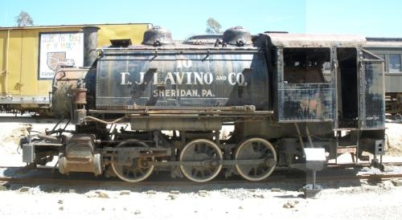

Last updated: 2 September, 2012
| Builder: | ALCO, Paterson, NJ |
| Build #: | 64764 |
| Date: | June 16, 1923 |
| Engine #: | 10 |
| Railroad: | EJ Lavino & Co |
| Website: | www.psrm.org |
| Email: | Contact Form. |
| Location: | Pacific Southwest Railway Museum, 750 Depot Street Campo, California 91906 |
| GPS: | 32.608411, -116.473633 Museum entrance gate. |
| Phone: | 619-478-9937 |
| Status: | Display |
| Notes: | Stephenson valve gear |
The engine went new to the Lavino Furnace Company (later E.J. Lavino & Company), an ore-processing metallurgical firm, as No. 10. Lettered in various schemes, with yellow trim and cab & bunker "L" monograms and white wheel rims, it served as a busy industrial plant switcher until retired at Lavino's plant in Sheridan, PA on Reading Railway's Harrisburg-Reading mainline in eastern Pennsylvania in the 1960s. A photo if it meeting one of the Reading's steam "Iron Horse Rambles" was in the September 1961 issue of Trains magazine.
After a museum request, EJL No. 10 was donated to the PSRMA May 11, 1966, the museum's first locomotive. It was shipped September 10th on its own wheels to Reading, PA; on a flatcar to San Bernardino, CA; and on its own wheels to Perris, CA, costing $ 1,332.49. It was then moved onto rented tracks at the Orange Empire Trolley Museum (later Railway Museum) January 31, 1967, as the PSRMA had no facilities of its own. During its 2,100-mile trip, its bell, builder's plate, and other items were kept in its smokebox for safekeeping. Rehabilitated by PSRMA members, EJL No. 10 pulled an OERM-owned gondola & caboose on the first PSRMA-operated train on February 25, 1967. It passed state hydrostatic tests in April, operated again on April 30, May 21, and October 8, 1967, and again appeared in Trains magazine. The PSRMA then concentrated its work in the San Diego area, and EJL No. 10 was stored in an open area at the OERM for 13 years, during which it was vandalized and its 400-pound middle (steam) dome casting removed by unknown persons. It was the subject of a prize-winning 1975 watercolor & 1983 print by artist Jim Doyle. EJL No. 10 was maintained by PSRMA member Charlie Holcomb until his death in April 1977. In mid-1980, it was cleaned and painted black, with white lettering & wheel rims, and black trim. Its yellow "L" monograms were not reapplied.
On January 9, 1981, EJL No. 10 arrived at La Mesa depot after weeks of preparation at the OERM and three days enroute via the Santa Fe and SD&AE. Its missing dome was found at the OERM and reinstalled, and a hive of bees that had settled in its steam chest at the OERM and "hitchiked" to La Mesa was removed in April 1981. After two years on display, in July 1983 it was taken to San Ysidro by the SD&AE and to Campo on the museum's first "Great Freight". EJL No. 10 was worked on in 1984, 1986, and 1990, and is on display at the Museum. When time and funds permit, it will be restored as a yard switcher, giving museum visitors the old-fashioned flavor of coal-fired railroading.
| Class: | 060-T-123 |
| Gauge: | 4'-8½" |
| F.M.Whyte: | 0-6-0T |
| Drivers: | 44” |
| Gear Ratio: | |
| Tractive Effort: | |
| Weight: | 117,440 |
| Weight on Drivers: | |
| Length: | 32' 3 1/2" |
| Boiler: | 180 |
| Cylinders: | 17" x 24" |
| Top Speed: | |
| Horsepower: | |
| Fuel: | 1.5 |
| Fuel Type: | Coal |
| Water: | 1,700 |
| Steam psi: |